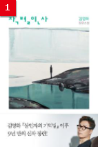

 소득공제 무료배송 작별인사 김영하 복복서가 2022.05.02 누구도 도와줄 수 없는 상황, 혼자 헤쳐나가야 한다 지켜야 할 약속, 붙잡고 싶은 온기 김영하가 『살인자의 기억법』 이후 9 년 만에 내놓는 장편소설 『작별인사』는 그리 멀지 않은 미래를 배경으로, 별안간 삶이 송두리째 뒤흔들린 한 소년의 여정을 좇는다. 유명한 IT 기업의 연구원인 아버지와 쾌적... 판매가 12,600원 적립금:700원